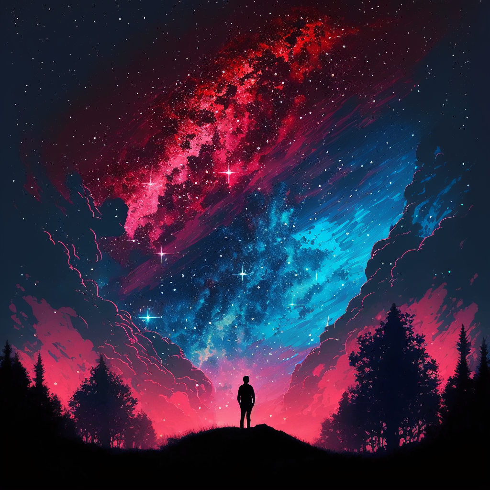

Il était une fois un homme qui s'était perdu en pleine forêt.
Il avait décidé de passer la nuit sous les étoiles, qui brillaient magnifiquement dans le ciel nocturne.
Il se sentit soudainement à l'aise et en paix, réalisant qu'il pourrait être perdu, mais il était toujours entouré de la beauté de la nature.